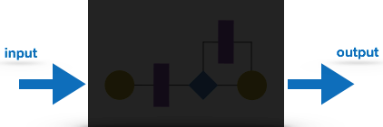
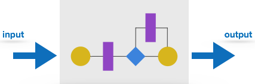

These are actual coding mistakes made by developers. In addition, there is a difference in output of software and desired output, is considered as an error.
FaultWhen error exists fault occurs. A fault, also known as a bug, is a result of an error which can cause system to fail.
Failurefailure is said to be the inability of the system to perform the desired task. Failure occurs when fault exists in the system.
It is carried out to test functionality of the program. It is also called ‘Behavioral’ testing. The tester in this case, has a set of input values and respective desired results. On providing input, if the output matches with the desired results, the program is tested ‘ok’, and problematic otherwise.
In this testing method, the design and structure of the code are not known to the tester, and testing engineers and end users conduct this test on the software.
The below are some Black-box testing techniques:
It is conducted to test program and its implementation, in order to improve code efficiency or structure. It is also known as ‘Structural’ testing.
In this testing method, the design and structure of the code are known to the tester. Programmers of the code conduct this test on the code.
The below are some White-box testing techniques:
While coding, the programmer performs some tests on that unit of program to know if it is error free. Testing is performed under white-box testing approach. Unit testing helps developers decide that individual units of the program are working as per requirement and are error free.
Integration TestingEven if the units of software are working fine individually, there is a need to find out if the units if integrated together would also work without errors. For example, argument passing and data updation etc.
System TestingThe software is compiled as product and then it is tested as a whole. This can be accomplished using one or more of the following tests:
When the software is ready to hand over to the customer it has to go through last phase of testing where it is tested for user-interaction and response. This is important because even if the software matches all user requirements and if user does not like the way it appears or works, it may be rejected.
Whenever a software product is updated with new code, feature or functionality, it is tested thoroughly to detect if there is any negative impact of the added code. This is known as regression testing.
We need to understand that software testing is different from software quality assurance, software quality control and software auditing.